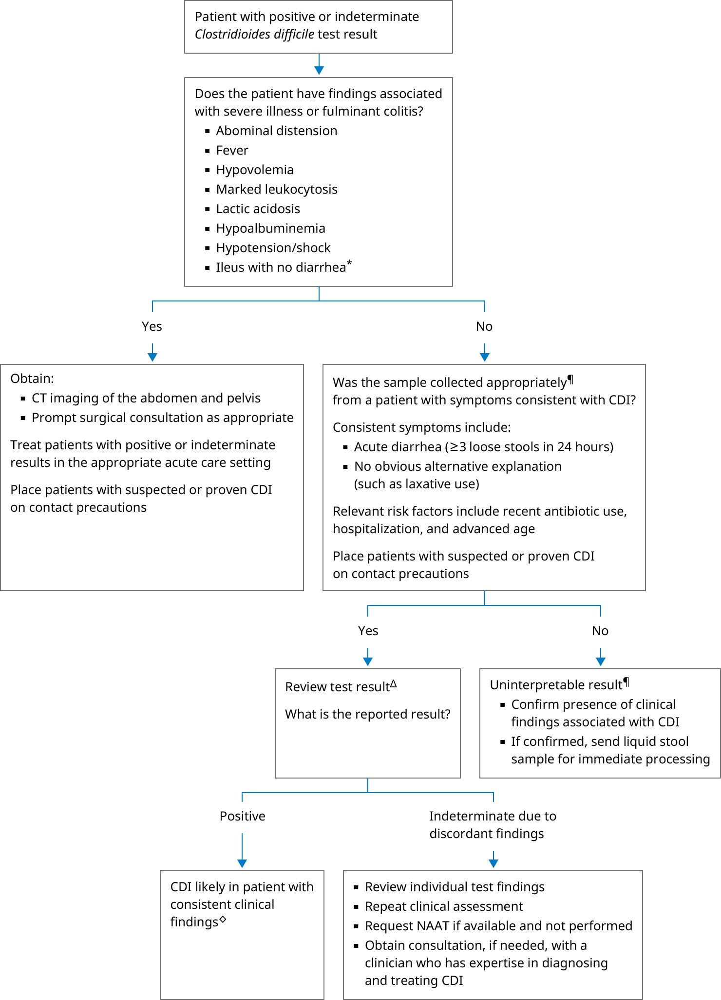

Interpretation of a specific abnormal test result should be based on the reference range reported with that result.
This algorithm is intended for use with additional UpToDate content on C. difficile infection.
CDI: Clostridioides difficile infection; CT: computed tomography; EIA: enzyme immunoassay; GDH: glutamate dehydrogenase; NAAT: nucleic acid amplification testing; PCR: polymerase chain reaction.
* Rarely, patients with severe or fulminant CDI can present with ileus and no diarrhea. In these situations, a rectal swab can be sent for CDI diagnostic testing.
¶ For patients with diarrhea and suspected C. difficile infection, liquid stool should be sent for C. difficile testing. For toxin detection testing, samples must be processed immediately or kept refrigerated. Formed stool from asymptomatic patients should not be submitted for laboratory testing, since presence of C. difficile toxin gene does not distinguish between CDI and asymptomatic carriage (which does not warrant treatment).
Δ Approach to testing is often determined by an institution's microbiology laboratory protocol:
◊ NAATs have a high sensitivity, but a positive NAAT alone is unable to distinguish CDI from asymptomatic carriage. Exclusive reliance on NAAT testing has been associated with overdiagnosis and overtreatment. False positive tests can be minimized by performing diagnostic laboratory testing only in patients with clinical findings suspicious for C. difficile infection.